DAT255: Deep learning engineering
Lecture 6 – Augmentation and advanced computer vision
This week
- Technicalities about loading data
- Data transformations (augmentation)
- Modern convnets for computer vision
- Other computer vision tasks
Data pipelines
In a deep learning setting, we typically need to consider that
- Data are a too big to fit in memory (problem)
- We have two separate compute units, the CPU and the GPU (opportunity)
Implications:
- Data must be divided into batches
- While the GPU is working on one batch, the CPU can prepare the next one.
Sequential processing

Open
Read
Train
Epoch
Prefetching

Open
Read
Train
Epoch
Prefetching + interleaving file reads

Open
Read
Train
Epoch
Prefetching + interleaving + parallel preprocessing

Open
Read
Map
Train
Epoch
TensorFlow Dataset
Get all these features with minimal effort though tf.data.Dataset
Effort: Getting the data into a Dataset.
Reduced effort: Keras convenience functions for “standard” data.
TensorFlow Dataset
As an example, create a Dataset from a list: (although we never do this in practice)
>>> dataset = tf.data.Dataset.from_tensor_slices([1, 2, 3])
>>> dataset
<_TensorSliceDataset element_spec=TensorSpec(shape=(), dtype=tf.int32, name=None)>
>>> for element in dataset:
>>> print(element)
tf.Tensor(1, shape=(), dtype=int32)
tf.Tensor(2, shape=(), dtype=int32)
tf.Tensor(3, shape=(), dtype=int32)Apply some transformation:
Important: The Dataset methods do not modify data in-place, but always returns a new Dataset.
TensorFlow Dataset
Assuming we already have a Dataset, set up the parallel processing chain:
or as a one-liner:
In most cases we can set buffer_size, num_parallel_calls, etc to tf.data.AUTOTUNE and have TensorFlow figure out the best setting for us.
Getting data into a Dataset
Can be tricky since Datasets are maximally generic, but Keras to the rescue for the most common data types:
I have
- Images:
keras.utils.image_dataset_from_directory - Time series:
keras.utils.timeseries_dataset_from_array - Text:
keras.utils.text_dataset_from_directory - Audio:
keras.utils.audio_dataset_from_directory
While if I have
- CSV files: Read the TensorFlow tutorial
- Something else: Code it yourself
Train a model
Datasets are input to .fit() just as usual:
and Keras figures out the rest.
See this week’s notebook and consult the documentation for more info on Datasets.
Improving generalisation
Realisation:
- We don’t have infinite training data
- Training data don’t cover the space of all realistic examples
Mitigation:
- Add artificially modified duplicates of the training data (while preserving information)
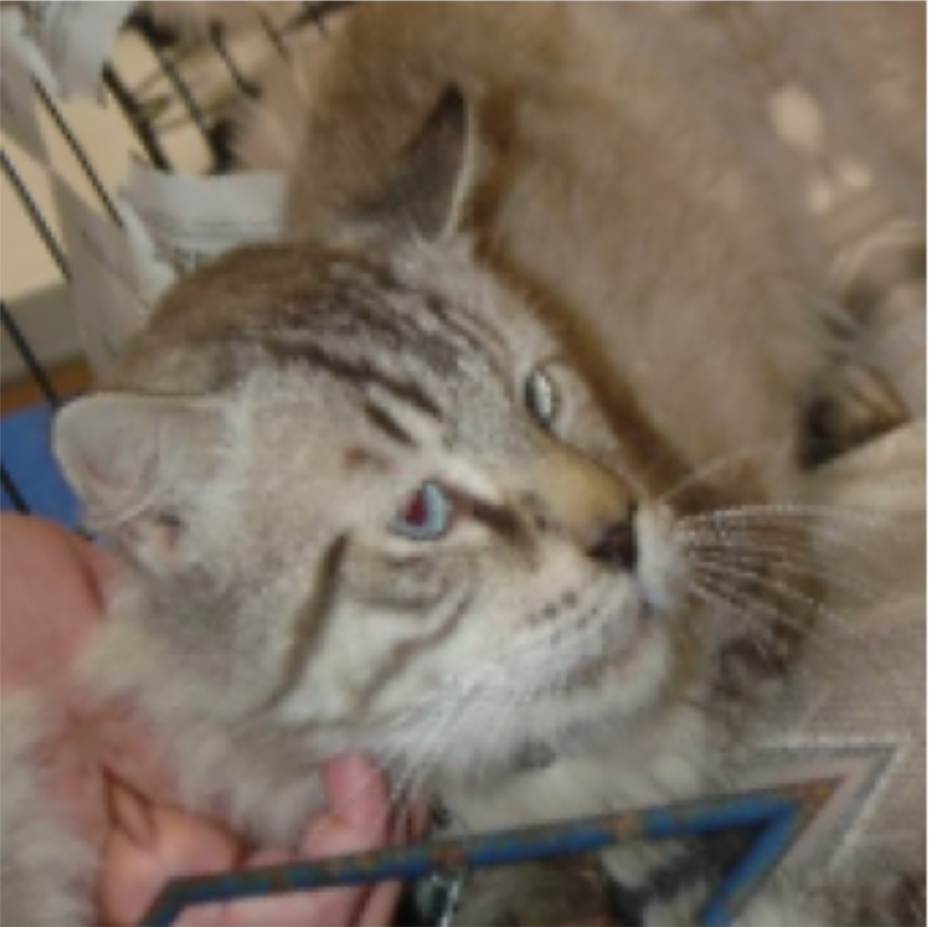
Augmentation
The benefit of augmentation greatly exceeds the effort involved
Always recommended to use for computer vision.
keras.layers.RandomFlipkeras.layers.RandomRotationkeras.layers.RandomCropkeras.layers.RandomBrightnesskeras.layers.RandomHue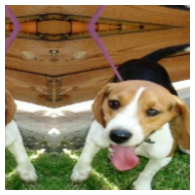
keras.layers.RandomTranslationkeras.layers.RandomShearkeras.layers.Equalizationkeras.layers.RandAugment (“do it all”)More advanced network configurations
Going beyond the Sequential model
The Keras functional API
Consider the equivalent ways of defining a network:
from keras import layers
model = keras.Sequential([
layers.Input(shape=input_shape),
layers.Conv2D(64, 3, activation="relu"),
layers.Conv2D(64, 3, activation="relu"),
layers.MaxPooling2D(pool_size=(2, 2)),
layers.Conv2D(128, 3, activation="relu"),
layers.Conv2D(128, 3, activation="relu"),
layers.Flatten(),
layers.Dropout(0.5),
layers.Dense(
num_classes, activation="softmax"
),
])inputs = layers.Input(shape=input_shape)
x = layers.Conv2D(64, 3, activation="relu")(inputs)
x = layers.Conv2D(64, 3, activation="relu")(x)
x = layers.MaxPooling2D(pool_size=(2, 2))(x)
x = layers.Conv2D(128, 3, activation="relu")(x)
x = layers.Conv2D(128, 3, activation="relu")(x)
x = layers.Flatten()(x)
x = layers.Dropout(0.5)(x)
outputs = layers.Dense(
num_classes, activation="softmax"
)(x)
model = keras.Model(
inputs=inputs,
outputs=outputs
)Bird classifier
Say that you for obvious reasons want to classify observations of birds.
Each data point contains:
- Picture of bird
- Size of bird
- (other numerical values related to observation of bird)
How to combine this information?
Bird classifier
In the functional API we can easily have two input sources:
input1 = keras.layers.Input(shape=(128,128,3))
x1 = keras.layers.Conv2D(64, 3, activation='relu')(input1)
x1 = keras.layers.MaxPooling2D(2)(x1)
x1 = keras.layers.Conv2D(64, 3, activation='relu')(x1)
x1 = keras.layers.MaxPooling2D(2)(x1)
x1 = keras.layers.Flatten()(x1)
input2 = keras.layers.Input(shape=(10,))
x2 = keras.layers.Dense(32, activation='relu')(input2)
x2 = keras.layers.Dense(32, activation='relu')(x2)
concat = keras.layers.Concatenate()([x1, x2])
x = keras.layers.Dense(64, activation='relu')(concat)
out = keras.layers.Dense(3, activation='softmax')(x)
model = keras.Model(
inputs=[input1, input2],
outputs=out
)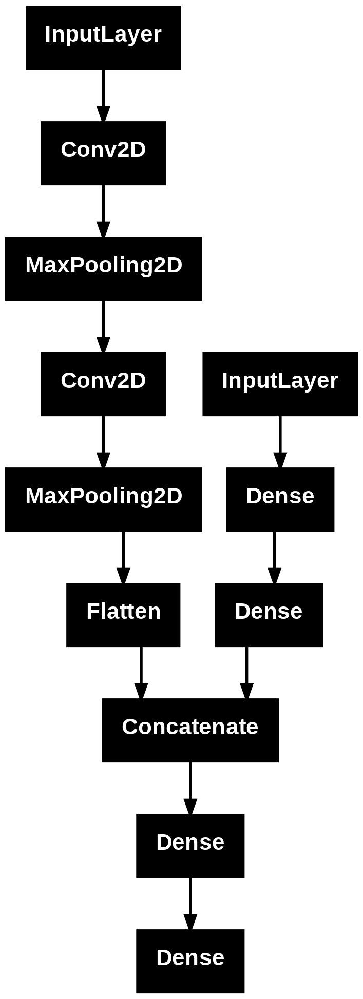
Non-sequential networks
Can have networks with
- Multiple inputs
- Multiple outputs
- Arbitrary layer connections
- Networks-inside-the-network
- Loops (will come to this later)
Let’s look at some noteworthy architectures.
Inception networks
The inception module features parallel convolutional layers with different kernel size:
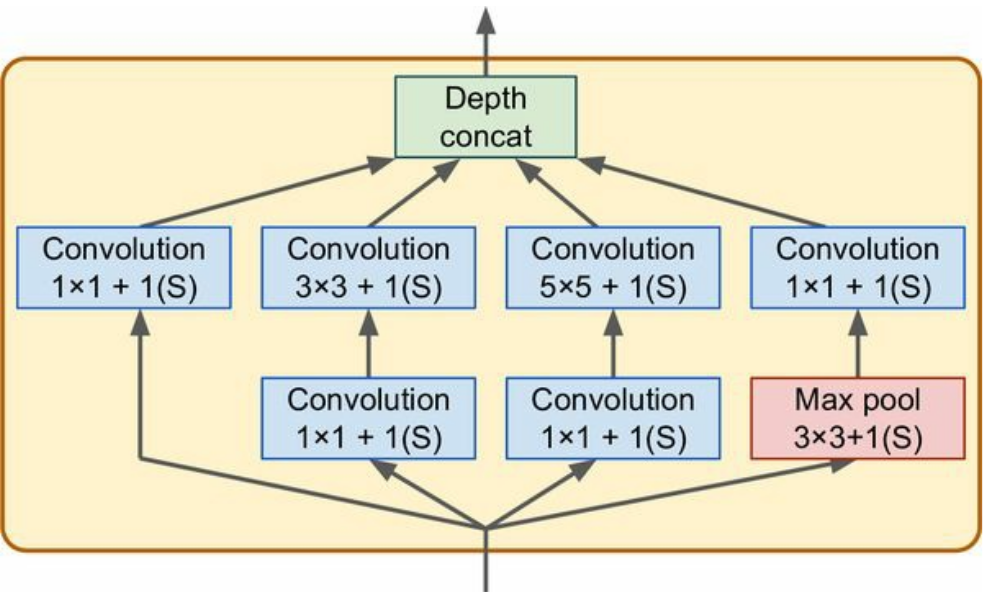
Output is concatenated and passed on to the next module
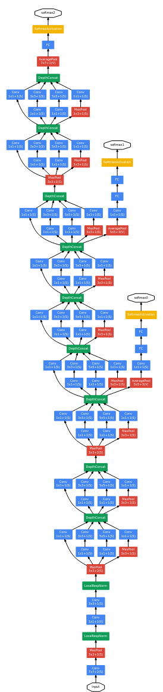
Residual networks
This architecture features skip connections, where data is passed (unmodified) around some layers, and then added back in
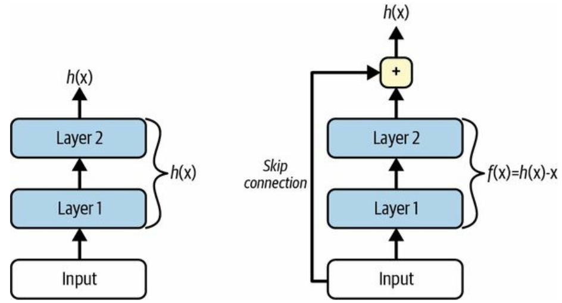
Residual networks
This architecture features skip connections, where data is passed (unmodified) around some layers, and then added back in
Idea: Avoid vanishing gradients or “dead” layers
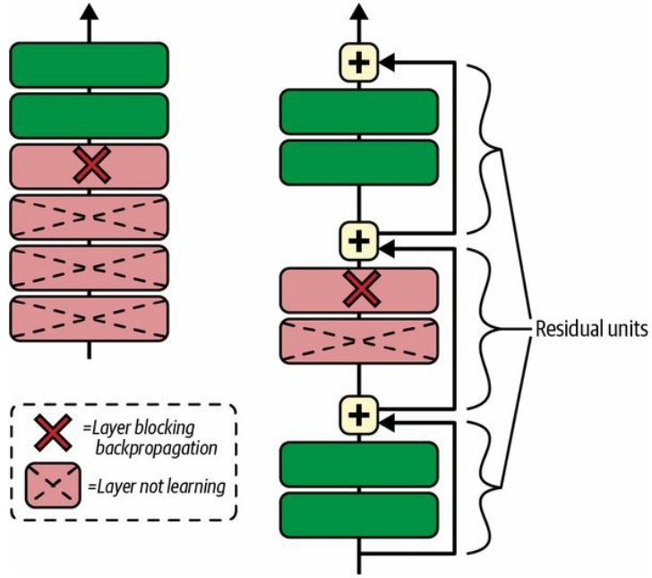
Residual networks
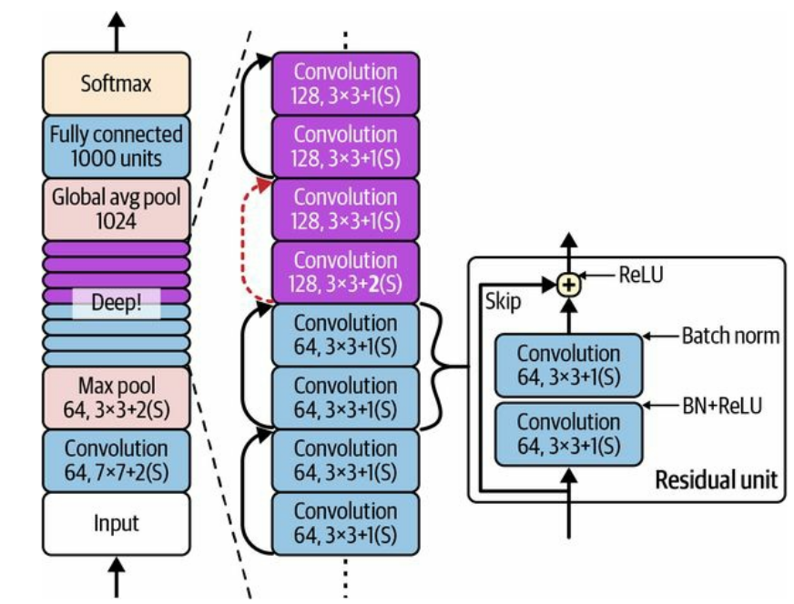
Densely connected convolutional networks
How about adding skip connections (almost) everywhere?
Enter the DenseNet:
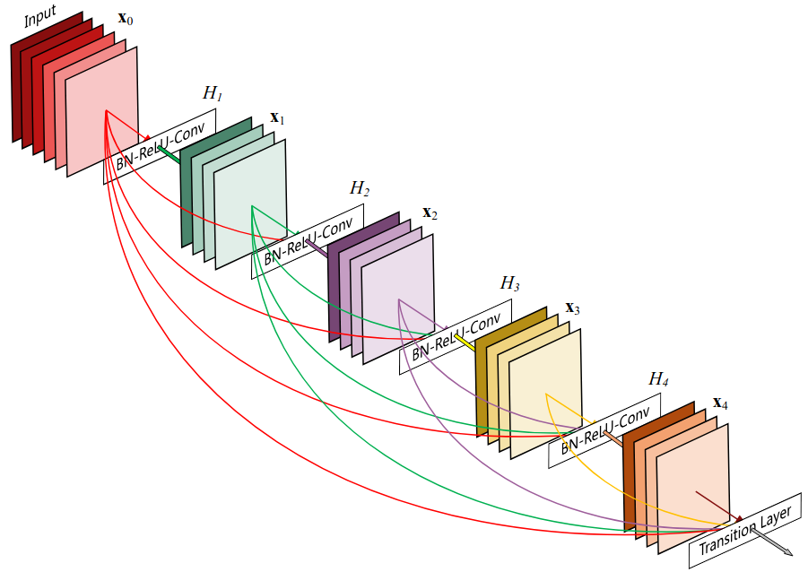
Xception networks
The Xception (“extreme inception”) architecture relies on depthwise separable convolution layers
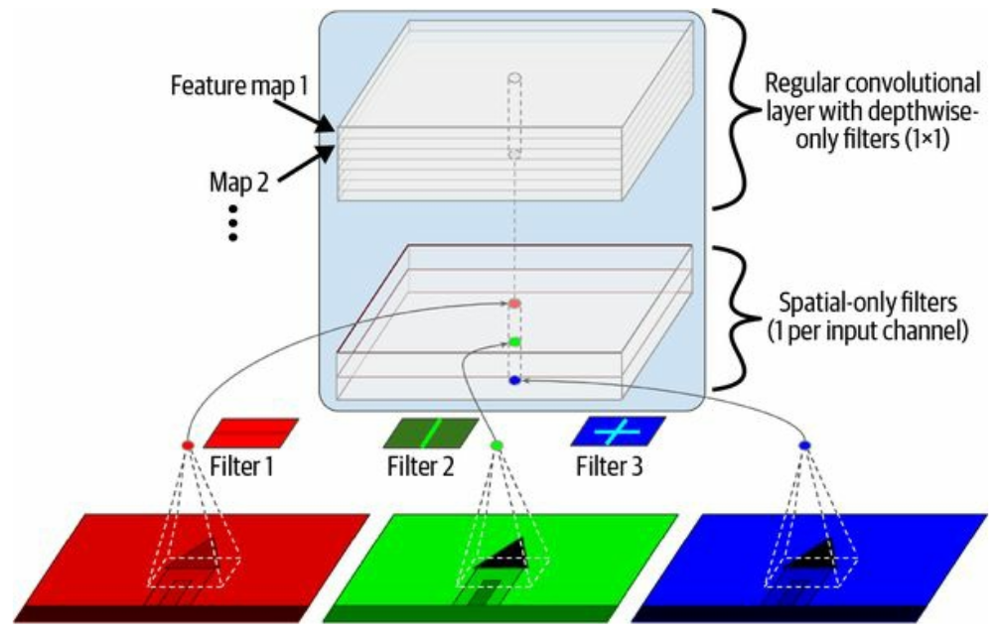
These layers are available as keras.layers.SeparableConv2D and can be used just like the regular Conv2D, often with increased performance
keras.applications
The most popular computer vision architectures are available as pre-trained models in keras.applications.
These are excellent starting points for
- feature extraction
- fine-tuning
- transfer learning
Note: The different models typically require specific preprocessing:
If you want to use
you should process the input images with
Other computer vision tasks
Convolutional nets are great for other things than just classification:
- Object detection: Localise (several) objects in an image
- Oriented bounding boxes: Localise and estimate orientation of objects
- Semantic segmentation: Classify each pixel onto an object
- Instance segmentation: Draw a detailed outline around abjects
- Pose estimation: Localise distinctive features or parts of an object
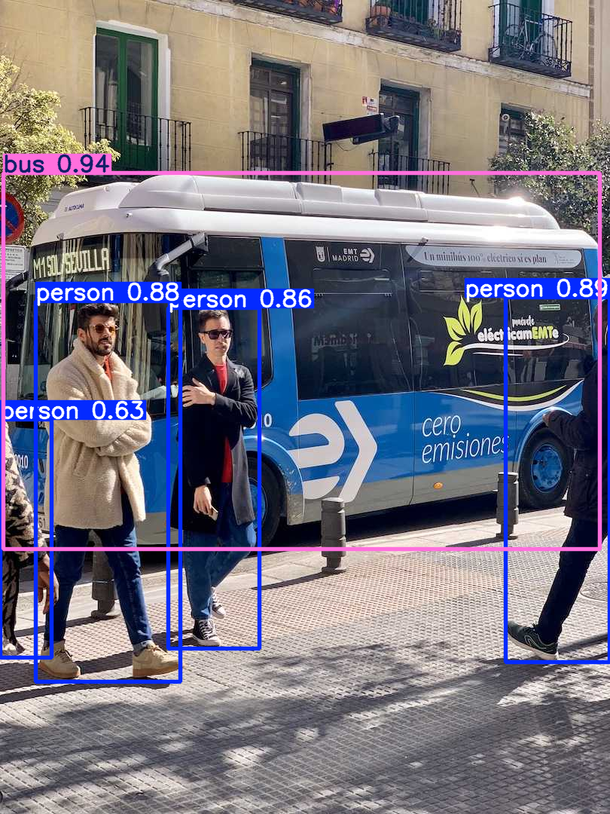
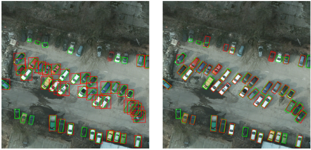
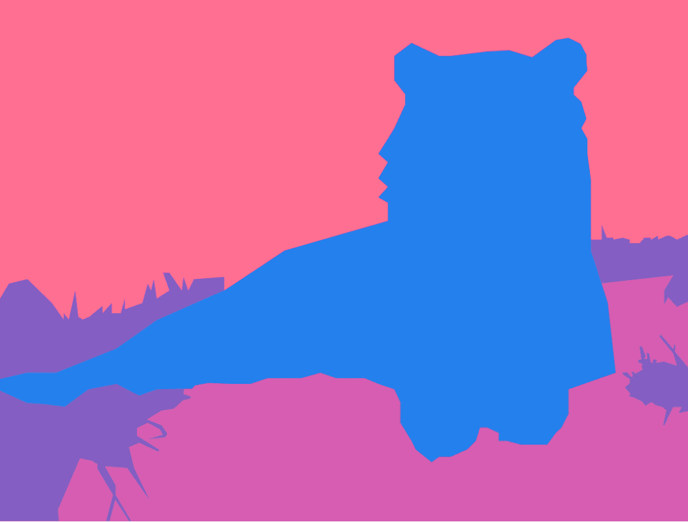
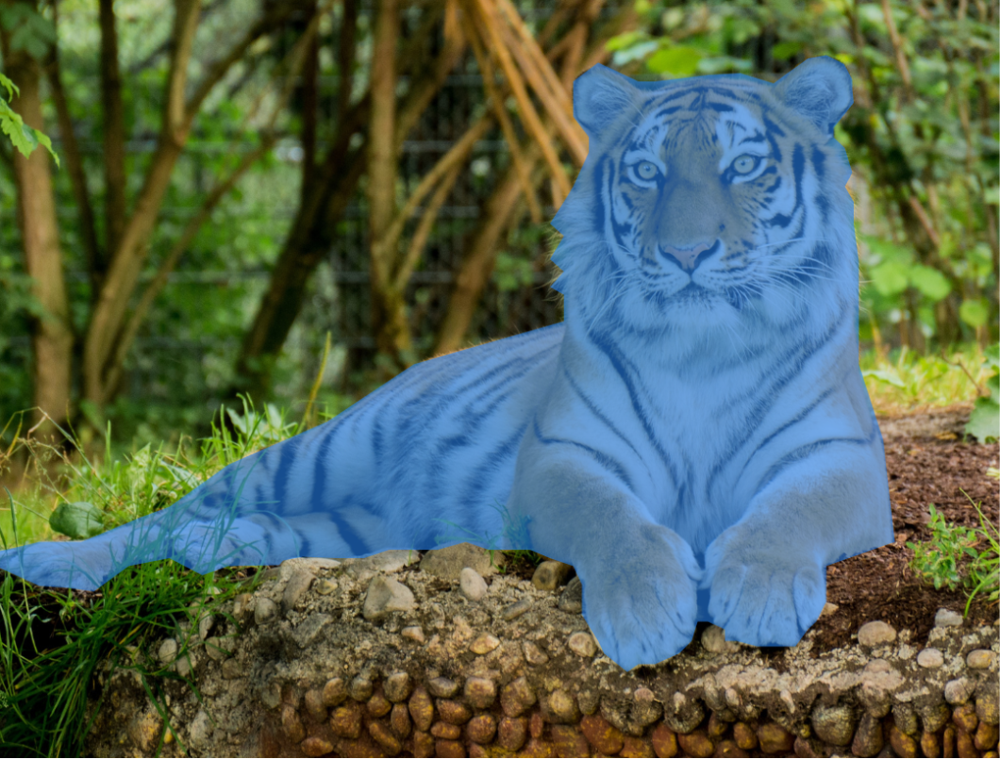
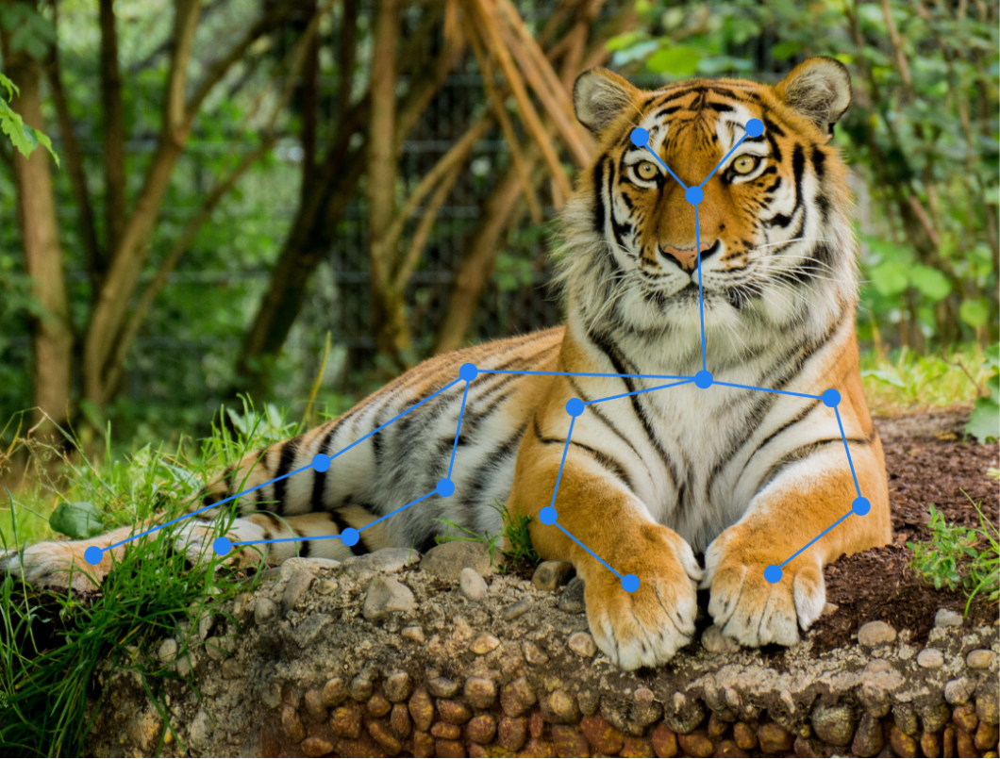
Segmentation
For segmentation we need to classify each pixel
Output must have same dimension as the input.
Can still downsample the input in the usual Conv2D + MaxPooling2D cycle to find large-scale patterns, as long as we upsample again to the correct dimensions.
Often talk about an encoder-decoder structure:

U-Net (2015)